|
I will be joining Purdue University - CS Department as an Assistant Professor in August 2021, where I will direct the Cognitive Robot Autonomy and Learning (CoRAL) Lab. My research interests revolve around a broad area of robot learning, from estimating multimodal representations to real-time collaborative robots planning and control, with applications towards daily-life assistive tasks considering human-in-the-loop. I received my Ph.D. in Electrical and Computer Engineering from UC San Diego in 2021. Previously, I completed my M.S. in Engineering at Osaka University in 2017 and a B.S. in Electrical Engineering from NUST in 2014. Prospective students: If you are interested in working with me, please fill out this form.
Industrial collaborations: Please feel free to reach out if you are interested in a collaboration or partnership. CV / Google Scholar / Twitter |
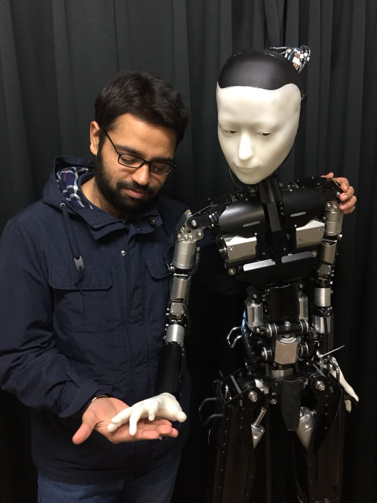 |
|
|
|
- At University of Lincoln, UK (Apr 2021), I gave a virtual, invited talk on the "Learning Representations for Motion Planning under Task-Specific Constraints."
- At Institute for Neural Computation-UC San Diego (Oct 2020), I gave a virtual talk on the "Emergence of a Mutualistic Relationship between Motion Planning and Machine Learning."
- At University of Toronto (Sep 2020), I gave a virtual talk about Motion Planning Networks.
- At 6th Heidelberg Laureate Forum (Sep 2018), I gave a talk on Deep Learning for Robotics in the Neural Computing & Deep Learning Workshop.
- At CRI Seminars held at UCSD in 2018, I gave an invited talk on Learning-based Motion Planning Algorithms.
- At AI Seminars held at Osaka University in 2017, I gave an invited talk on Intrinsically-Motivated Reinforcement Learning for Human-Robot Interaction.
- I gave a talk on Living with Robotics-The Next Generation of Intelligent Machines at Information Technology University, Pakistan, in 2016.
| 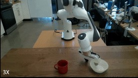 |
Ahmed Qureshi, Arsalan Mousavian, Chris Paxton, Michael Yip, Dieter Fox Robotics: Science and Systems, 2021 [video] [bibtex] |

|
Linjun Li, Yinglong Miao, Ahmed Qureshi, Michael Yip IEEE Robotics and Automation Letters, 2021 [website] [bibtex] |
| 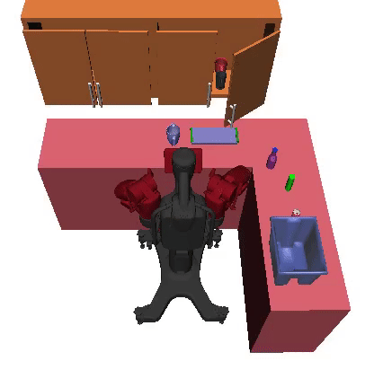 |
Ahmed Qureshi, Jiangeng Dong, Asfiya Baig, Michael C. Yip Submitted to IEEE Transactions on Robotics, 2021 [project page] [bibtex] |
| 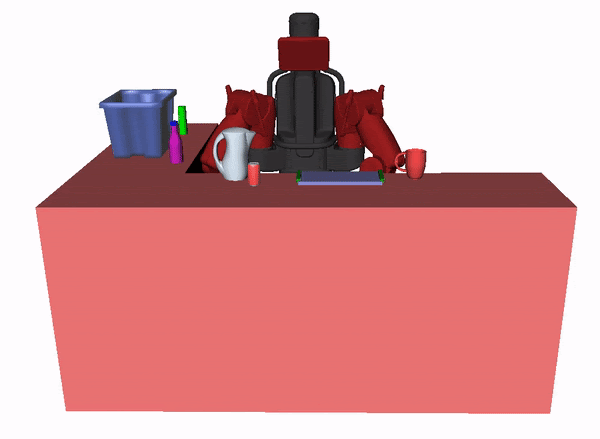 |
Ahmed Qureshi, Jiangeng Dong, Austin Choe, Michael C. Yip IEEE Robotics and Automation Letters, 2020 [project page] [bibtex] |
| 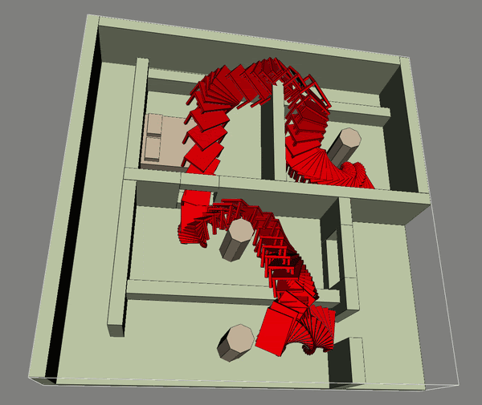 |
Ahmed Qureshi, Yinglong Miao, Anthony Simeonov, Michael C. Yip IEEE Transaction on Robotics, 2020 [project page] [bibtex] |
| 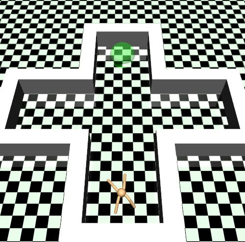 |
Ahmed Qureshi, Jacob J Johnson, Yuzhe Qin, Taylor Henderson, Byron Boots, Michael C. Yip International Conference on Representation Learning (ICLR), 2020 [project page] [bibtex] |

|
Ahmed Qureshi, Byron Boots, Michael C. Yip International Conference on Representation Learning (ICLR), 2019 [project page] [bibtex] |

|
Ahmed Qureshi, Anthony Simeonov, Mayur J. Bency, Michael C. Yip International Conference on Robotics and Automation (ICRA), 2019 [project page] [bibtex] |
| 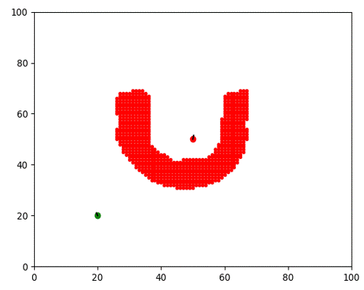 |
Mayur J. Bency, Ahmed Qureshi, Michael C. Yip International Conference on Intelligent Robots and Systems (IROS), 2019 [project page] [bibtex] |
| 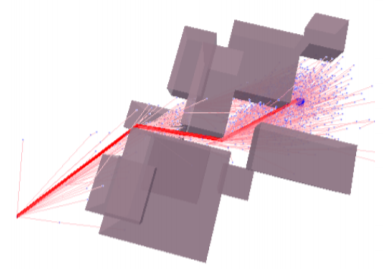 |
Ahmed Qureshi, Michael C. Yip International Conference on Intelligent Robots and Systems (IROS), 2018 [project page] [bibtex] |
| 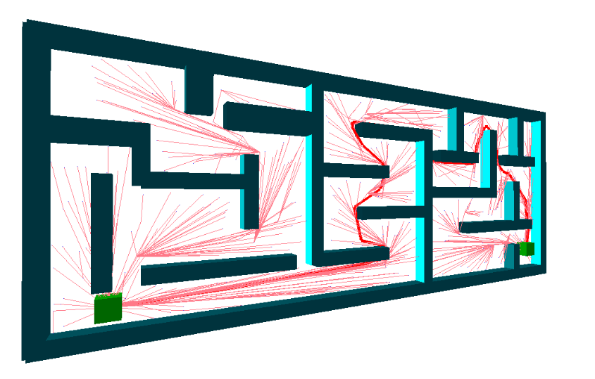 |
Zahid Tahir, Ahmed Qureshi, Yasar Ayaz, Raheel Nawaz Robotics and Autonomous Systems, 2018 [bibtex] |
| 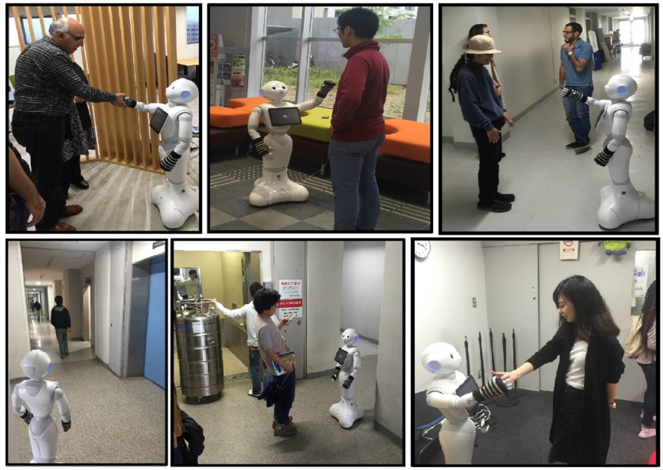 |
Ahmed Qureshi, Yutaka Nakamura, Yuichiro Yoshikawa, Hiroshi Ishiguro Neural Networks, 2018 [bibtex] |

|
Ahmed Qureshi, Yutaka Nakamura, Yuichiro Yoshikawa, Hiroshi Ishiguro International Conference on Robotics and Automation (ICRA), 2017 [bibtex] |
| 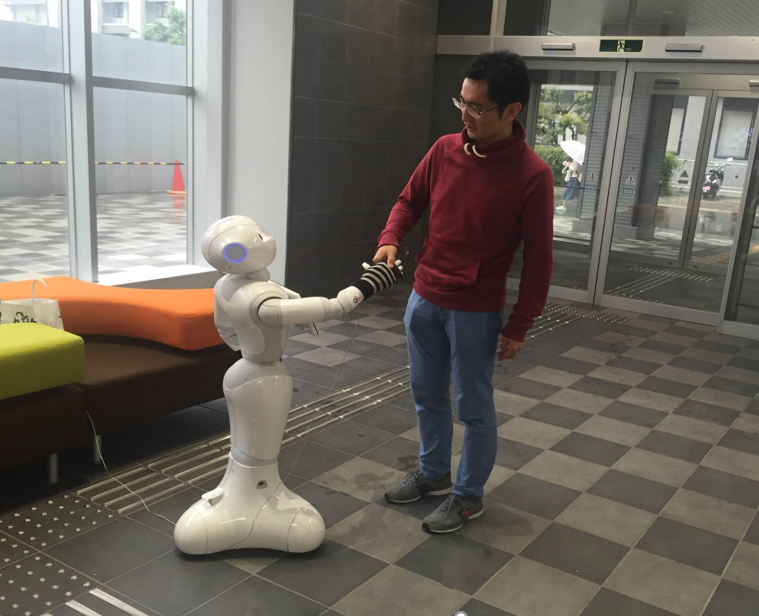 |
Ahmed Qureshi, Yutaka Nakamura, Yuichiro Yoshikawa, Hiroshi Ishiguro International Conference on Humanoid Robots (Humanoids), 2016 [bibtex] |
| 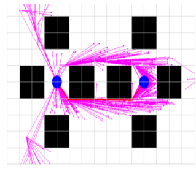 |
Ahmed Qureshi, Yasar Ayaz Autonomous Robots, 2016 [bibtex] |
| 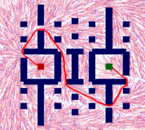 |
Ahmed Qureshi, Yasar Ayaz Robotics and Autonomous Systems, 2015 [bibtex] |
|
|